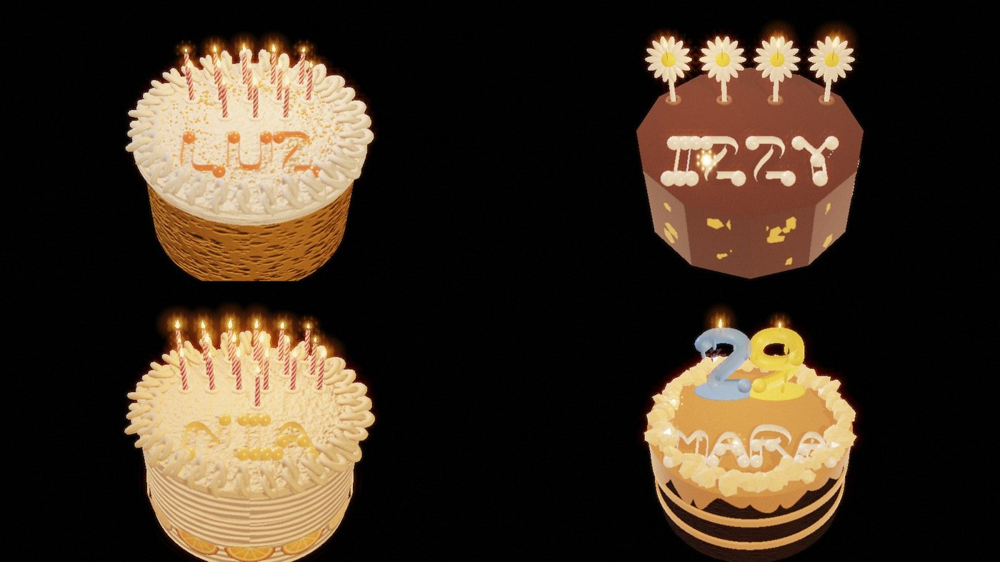

The Memory Orb looks like a Canon cinema lens, works like an ARRI hand controller, and edits like Blender.
Turn the TIME ring and watch the cake move while the children stay still. The orb below is live: three rings and a thumb key, labelled with what they do in the demo. Drag a ring, or use the arrow keys.
FIELD 110
Sweeps the forest away in depth, revealing the chamber behind it.
VARIANT 112
Changes the insect on the same leaf, or the cake on the same table, while preserving the composition.
TIME 114
Jogs the selected layer forward or backward. Let go and it carries on from where you left it.
HOLD 120
Locks the selected subjects while the other layers continue.
The hardware explains itself in the room.
Apple Vision Pro has the closest single interaction for the forest reveal. Blackmagic has the closest one for the birthday scene. Those are design analogies for Vesper, grounded in what Ana does on screen. The current Vesper demo put its controls beside the chamber. This design puts them on the orb: the product image is the control, with three independently draggable rings and a thumb key.
That mapping is original to Vesper. The page leads with one shot that proves what the company makes: turn the TIME ring and the cake moves while the children stay still.
Six design analogies, and what each one explains.
| Reference | What it explains about the orb |
|---|---|
| Canon Cinema EOS / ARRI Hi-5 | The object and the grip. Canon gives you the barrel, engraved scales, and nested rings. ARRI gives you the professional hand unit: discrete controls for separate axes that an operator can adjust while watching the shot. This is the strongest hardware pairing. Canon cinema lenses |
| Blender / Unreal Sequencer | What Ana is editing. In the birthday scene, the children hold while the cake keeps moving. Think separate objects and animation tracks in one scene. Blender is the analogy for authoring the objects. Sequencer is the analogy for running their timing in a live 3D scene. ASC on the shot |
| Blackmagic Speed Editor | How time should feel in the hand. Its jog wheel makes frame-by-frame movement tactile. For Vesper, apply that to a selected object or group. Hold the children, then jog the cake while the rest of the room stays put. Blackmagic |
| Apple Vision Pro / Meta Quest | How the room responds. Vision Pro’s Digital Crown is the closest analogy for turning from the projected forest toward the physical chamber. Quest is a useful reference for a hand-held spatial input, especially if pointing chooses where to edit. The film gives a more distinctive visual than a generic immersion slider: the forest recedes in sections. Digital Crown |
| Logitech MX Creative Console / 3Dconnexion SpaceMouse | How the controls can be assigned. Logitech gives you a dial and dedicated action keys. SpaceMouse gives you push, pull, tilt, and twist for navigation. Use the first as a reference for assigning actions to the orb’s buttons, and the second if moving the whole orb should move your viewpoint. Logitech |
| Sony / Nikon | Where they fit in the visual identity. Sony on the room-system side of the comparison, Nikon on the precision-optics side. For the orb itself, Canon’s marked cinema barrel and ARRI’s separate control axes give Vesper more specific details to borrow. |
Who made the Memory Orb?
Mike Hill designed the film prop. The film leaves its in-world manufacturer unidentified. Propstore documents the original as a custom-built animatronic with expandable outer rings, independently spinning inner rings, and inset buttons. Property master Doug Harlocker demonstrated those controls. The fabrication company is not verified, and the Moxie Tool attribution could not be corroborated. In the story, Ana operates the orb and Wallace buys her memory work.
Vesper Instruments is an in-world product study for an independent optical instrument maker. Vesper, the model number, and the demo controls are original design choices. Other in-world brands are discussed in this analysis of the Wallace Corporation.
What UI do we actually see?
| The orb in Ana’s hands | Concentric rings and inset buttons; a labelled power switch. The sources don’t establish a button-by-button mapping. Prop · Hill’s concept |
| The projection around her | The insect changes on the leaf, the forest drops away in sections, the children freeze while the cake keeps spinning. You see the edit happen to the scene itself. Scene · BUF |
| The chamber and glass | The pale dome, low perimeter light, and transparent partition. McCoy · Deakins |
| The scan station | The screenplay describes a Stelline Scan with a chin rest and an eye-scanning light, like a slit lamp: a second instrument in the lab. Screenplay |
A spatial editor for rehearsing how an event could have happened.
Ana works inside a running scene, changes one part of it, and judges the change against everything she chose to keep. The leaf still supports the insect. The table still holds the cake. The children can stay in a pose while the cake turns. The operation that ties those moments together is changing one part of a live scene while preserving particular relationships to the rest.
Independent layer clocks are an ingredient. The stronger claim candidate is how the system keeps an edit valid when the scene keeps moving, the target changes form, or a dependency crosses from held time into live time.
Worked example from the specification: both layers reach 2.00 s, a hold captures the children at 2.00 s, one host second later the cake is at 3.00 s while the children remain at 2.00 s, and a −0.25 s jog on the held cake gives 2.75 s without altering the children.
01Initial interpretation
The Memory Orb is a spatial editor for rehearsing how an event could have happened. I would revise the patent’s center of gravity: independent layer clocks are an ingredient, and the stronger claim candidate is how the system keeps an edit valid when the scene keeps moving, the target changes form, or a dependency crosses from held time into live time. That requires a theory of what an edit is allowed to change.
02Theory skeleton
| Beetle → other insects → scarab → changing eyes, on the same leaf | A persistent role such as insect-on-this-leaf, interchangeable assets, and a way to narrow an edit from the whole insect to a feature. Placement and appearance are separate. |
| Visitor alert → doorway appears → forest gives way to lab | Separate states for the authored forest, its visibility in the room, and the doorway. Revealing the actual room can be a presentation operation while the forest edit remains recoverable. |
| Cake placement, icing, candle states, facial expressions | A scene made of parts with different controls. A candle can be a visible object, a light source, and the source of a timed event. A child’s expression can be directed independently of placement. |
| Children freeze while the cake rotates | Concurrent evaluation of held and moving elements. A build has to decide whether holding a child’s pose also holds their location, shadows, expression, and response to candlelight. |
| Softened edges and a first-person hand reaching for frosting | A distinct remembered viewpoint. Edge softness belongs to the authored experience. |
| Ana examines K’s recollection | A separate inspection session with its own source and playback state. A judgment about a recollection belongs to the examiner. |
The software to build is a live scene sequencer with a transaction attached to every continuous gesture. Each transaction carries {target role, property, source revision, preview delta, preservation rules}. The orb provides the gesture; the scene provides its meaning. The system binds that meaning when she takes hold of the control, so crossing another object with the orb mid-turn cannot reinterpret the gesture.
03Assumption ledger
| Safe | A prototype can represent the demonstrated actions with a scene graph, pre-authored variants, animation tracks, and a real-time renderer. The scenes do not require automatic generation. |
| Uncertain | The orb’s gesture vocabulary, whether it tracks pointing, what its rings sense, and whether it talks to a separate chamber host. The prop proves moving hardware; the software assignments are ours. |
| Uncertain | Whether Ana intends to hold a subject’s pose, its position in the room, or every channel that contributes to its appearance. |
| Needs a user decision | What the operator means by hold. A child on a moving chair can stay seated in the same pose or stay fixed in the room. Prototype hold pose as the default and make hold in room an explicit second operation. |
04Operational description
- Resolve: the operator points to the insect; the software offers body, eyes, or placement because the current asset declares those capabilities.
- Capture: the thumb press attaches the gesture to the role, property, reference frame, and revision. A new mesh or a wandering pointer does not change what the current turn means.
- Produce: ring motion creates a temporary edit. For a body swap the editor aligns the incoming insect’s contact frame to the existing leaf anchor.
- Resolve dependencies: for each dependency the edit crosses, read its live value, read a held sample, recompute it from the preview, or stop and expose a conflict.
- Commit: a valid preview and operator confirmation become one reversible scene revision. Ordinary playback continues.
- Visitor alert: the entrance becomes visible while the forest composition and the current edit stay separately addressable.
The birthday scene is the decisive example. Ana holds the child’s pose and jogs the cake backward. The child can still receive live candlelight. But if the child’s finger touches the icing, the backward jog can make the cake pass through it. The software can preserve contact by moving the hand with the cake, suspend the contact constraint for the rehearsal, or block the jog until Ana chooses. A second clock alone cannot decide among them.
05Failure and change tests
| Replacement insect has different geometry | Keep the leaf attachment through a declared contact frame. If it cannot be satisfied, keep the last valid preview and expose the missing attachment. |
| The selected eye disappears during a body swap | End or suspend the eye edit. Preserve the parent insect selection. Re-apply only if the new body declares a compatible mapping. |
| Jogging crosses a candle ignition or sound cue | Evaluate the preview at the requested time without firing real-time events. Scrubbing over a flame cue five times should not emit five ignitions. |
| A shared dependency would silently move a protected object | Resolve it with the chosen rule or block the edit. A hold promises specific properties, such as the child’s pose; reflections and shadows may still respond to the live scene. |
| Tracking drops out during a turn | Keep the last valid preview, stop accepting deltas for that gesture, and require capture confirmation before resuming if the reference frame changed. |
| If the leaf tears while the insect is held | The same-triangle anchor fails; a new mapping can attach the insect to a surviving fragment, otherwise the edit suspends and the lost attachment is shown. |
| If the whole birthday should rewind except the candle flames | The clock assignment moves from one object to a group with an exclusion. Flames keep live time; candle placement follows the cake; flame illumination is evaluated against the rewound geometry. |
06Implementation plan
Use one scene evaluator for both demos, forest and birthday, with three pieces around it: a scene model (stable roles, attachment frames, editable properties, clocks, dependencies), a gesture interpreter (binds ring and key events to an operation for the lifetime of a gesture), and a preview evaluator (checks dependency rules, shows a tentative result, commits or cancels as one edit).
The test that matters most compares two evaluations at the same elapsed time: the scene with no edit and the scene with the proposed edit. Compare protected properties against that live baseline. An unedited leaf may keep swaying in both runs; a child whose pose was held should retain the held pose in the edited run.
07What is novel, and what only Ana can supply
The first draft’s broad claims face credible overlap: independent clip timelines, OpenUSD variants and edit layers, immersive animation authoring, pointer capture, and selective rollback in game engines. A ring-shaped controller combining those familiar functions has a weak obviousness story on its own.
The stronger candidate is a specific evaluation procedure. A gesture captures a semantic target and a set of properties to preserve. During a variant change or local-time edit, the system resolves dependencies crossing between edited and protected properties by binding each to live, held, or recomputed state, and validates the result against the running scene before committing. That is a claim candidate to search and test; nothing here establishes novelty or non-obviousness.
The part only Ana can supply is what is worth preserving. She may keep the child’s hesitation and change the smile, or keep the leaf and give the insect a different face. The software can preserve a contact, a pose, a rhythm, or a viewpoint. The artist decides which of those makes it the same memory.
Handheld apparatus for spatial scene authoring with independent layer time control.
A fictional utility patent specification: 38 paragraphs, 18 claims, 8 figures, and a source concordance that separates what comes from the screenplay, film, or prop from what is proposed here. It has no filing or grant number.
A spatial scene authoring system comprising a handheld controller having a pose tracker, independently sensed first and second rotary inputs, and a capture actuator… retain the association when the selection ray moves away from the identified layer, set a playback rate of the identified layer to zero in response to a hold command while advancing a second layer, modify a sampled local time of the identified layer in response to a signed increment from the first rotary input while the playback rate remains zero… — Claim 1
Read the specification (PDF, 14 pages)
Reference numerals: 100 controller · 102 housing · 104 spine · 106 sleeve · 110 field ring · 112 variant ring · 114 time ring · 120 thumb actuator · 130 angle sensors · 132 pose assembly · 134 processor · 136 haptic actuator · 140 window · 200 host · 210 spatial output · 220 scene store · 230 chamber · 234 protected volume · 236 barrier · 240 selection ray · 250 layer · 252 element · 254 anchor · 256 variants · 260 child time · 262 cake time · 270 transaction · 280 inspection terminal · 282 input station · 284 review console · 286 review store.

Stelline Studio: the orb as the whole interface.
A browser studio for the details Ana lingers on: a bug’s compound eye, a birthday cake and its piped name, a child’s face in candlelight. Rings are banks of controls, the orb types the name, and an inverse mode turns the rings by itself to match a target. Procedural and live; the film’s segmentation atlas is inside.
Open the studio →V4 master